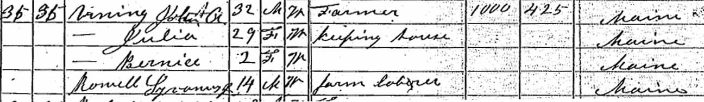

Documentation for John Q. A. Vining - Julia [...]
Census Data
| |
1870 |
1880 |
1890 |
1900 |
1910 |
1920 |
| John Q. A. Vining |
32 |
? |
? |
? |
? |
? |
| Julia ([...]) Vining |
29 |
? |
? |
? |
? |
? |
| Bernice Vining |
2 |
? |
? |
? |
? |
? |
1860 It is possible that the John Vining above was reported to be living with a Reynolds family (dwelling 103, family 120) in their 1860 Canton, Oxford County, Maine, household in addition to being reported as a member of his parents' household.
1870 Weld, Franklin County, Maine - dwelling 35, family 35. Also living in this household in 1870 was Sy[l]vanus Rowell Jr. (14 y., b. Maine, farm laborer).
